Le top des films 2016
This post was originally written in French.
Une année cinéma en demi-teinte. Pas de chef d'oeuvre, en tout cas de mon point de vue. Quelques très bons films et surtout de nombreux films plus mineurs mais originaux et fort recommandables.
Voici donc une liste d'une quarantaine de films pour occuper vos soirées d'hiver avant l'arrivée des films 2017, qui s'annonce comme une année très ambitieuse.
Pour rappel: Top 2015, Top 2014, Top 2013, Top 2012, Top 2011, Top 2010, Top 2009, Top en 2008, Top en 2007 , Top en 2004-2005-2006
Les "pas encore vus"
Comme toujours une série de films que je n'ai pas eu l'opportunité de voir et qui auront peut-être leur place dans le classement. Je le mettrai à jour après coup.
Carol, Elser, 45 years, Brooklyn, Les innocentes, Mal de pierres, Vaiana
Le top 2016
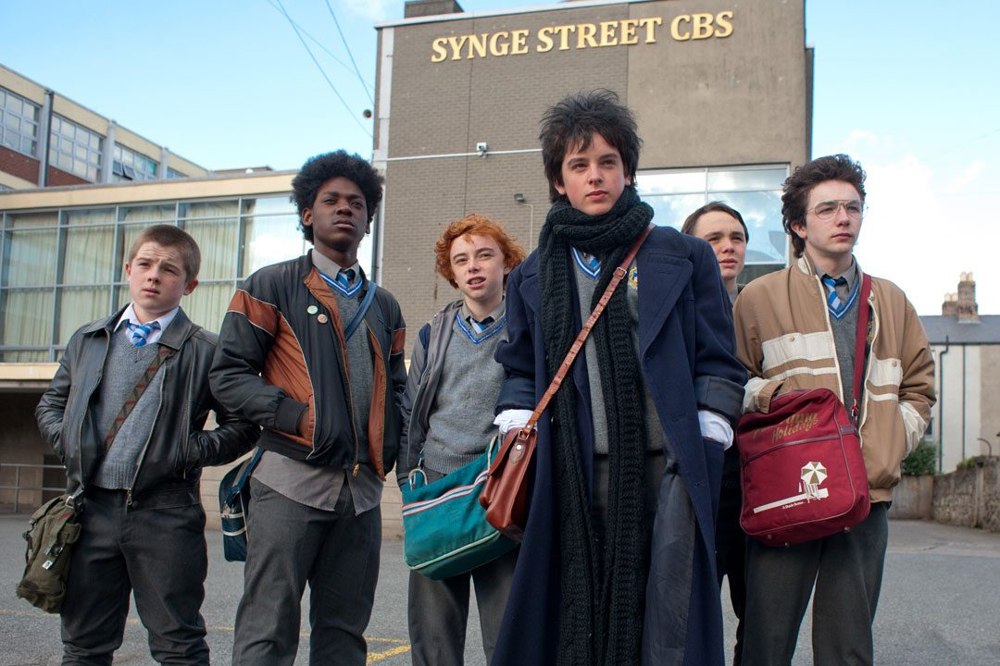
1/ Sing Street, bande-annonce,
"La petite perle de 2016 ... j'ai fondu ;-)"

2/ The Revenant, bande-annonce
"Voilà donc la première claque de 2016. Je pourrais même lui mettre un peu plus tellement il m'a impressionné. Une histoire simple certes, basé sur des faits réels, mais des acteurs ultra-investis, et un parti de mise en scène qui vous transporte au coeur de l'action. Pour ceux qui apprécient, ce sera vertigineux. Pour les autres, ce sera probablement un peu long et simpliste ;-)"
"Deuxième claque de l'année, le nouveau film de Danny Boyle, scénarisé par Aaron Sorkin, ou comment faire une biographie sur base de trois moments de la vie Steve Jobs, trois moments qui se déroulent avant la présentation de nouveau produit. Les dialogues de Sorkin claquent comme d'habitude, ca va vite , c'est intelligent. Fassbender, Winslet sont formidables. Et la réalisation de Danny Boyle fait moins dans le show que d'habitude, pour être plus précise. Le film est un four aux USA, à partir quelques nominations ultra-méritées par-ci par-là. Mais clairement, c'est une petite pépite."
4/ Arrival, bande-annonce
"Dernière entrée dans le top. Le dernier très bon film de Villeneuve, en attendant son Bladerunner en 2017. Quel talent, quelless images ..."

"Ce qui est épatant dans le cinéma américain, c'est justement ce genre de film. A côté de sortie audacieuse (Steve Jobs, The Revenant), ce cinéma arrive chaque à nous sortir des film de facture classique (un polar, un thriller et dans le cas présent une enquête journalistique), qu'on se dit merde, ils sont bons quand même. Spotlight, c'est cela. Basé sur des faits réels, le film déroule un casting parfait (particulièrement Mark Ruffalo, comme souvent d'ailleurs) et nous, ... on pense à All the President's Men, et on se dit qu'on manque de film comme cela chez nous".**
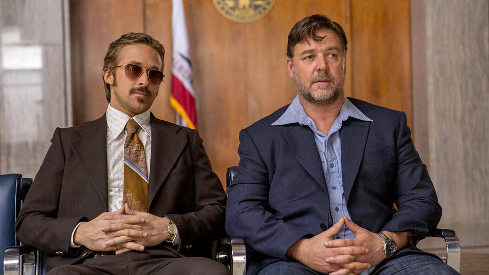
6/ The nice guys, bande-annonce
"J'ai un peu de difficultés à comprendre que ce film drôlissime soit absent de tous les tops 2016 ... mais soit, moi je le recommande vivement"

7/ 10 Cloverfield Lane, bande-annonce
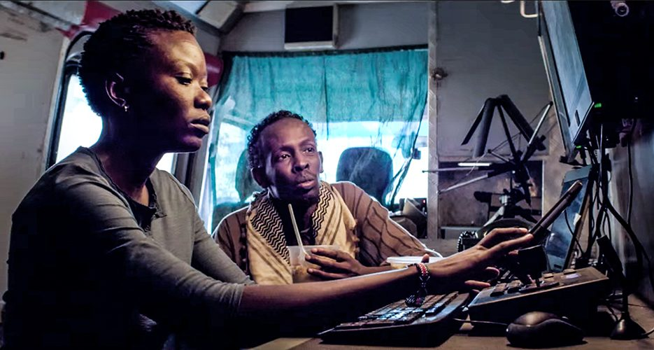
8/ Eye in the sky, bande-annonce
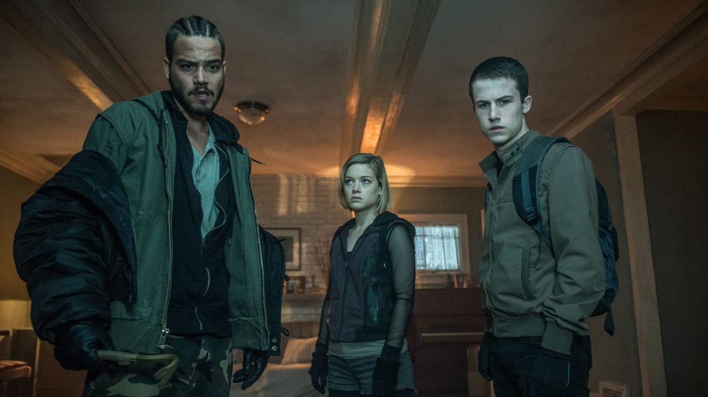
9/ Don't breathe, bande-annonce
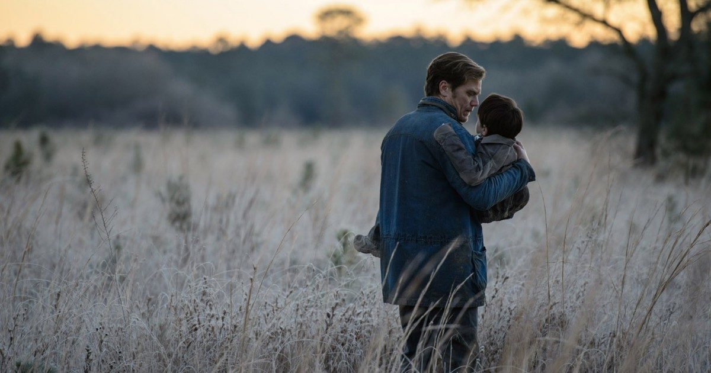
10/ Midnight Special, bande-annonce
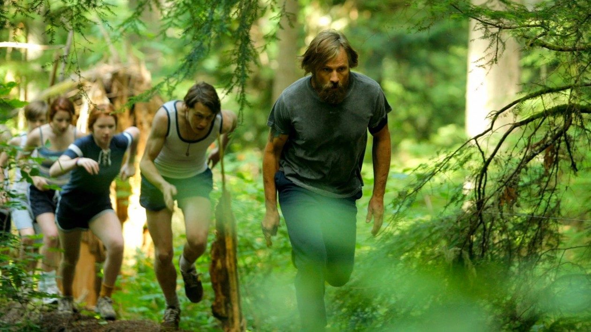
11/ Captain Fantastic, bande-annonce
12/ War dogs, bande-annonce

13/ Room, bande-annonce,"Difficile de parler du film sans déflorer l'intrigue. Grand film? Non bon film, mais grandes interprétations à la fois de Brie Larson et surtout ~~de la petite fille~~ du petit garçon."

14/ Green Room, bande-annonce
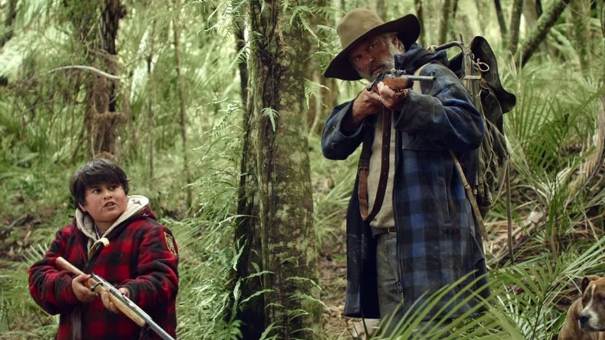
16/ Hunt for Wilderpeople, bande-annonce
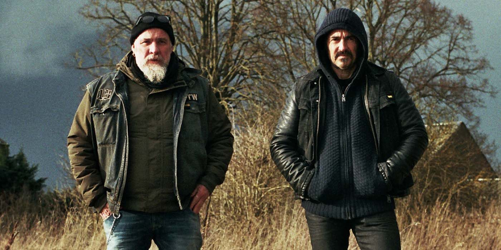
17/ Les premiers, les derniers, bande-annonce
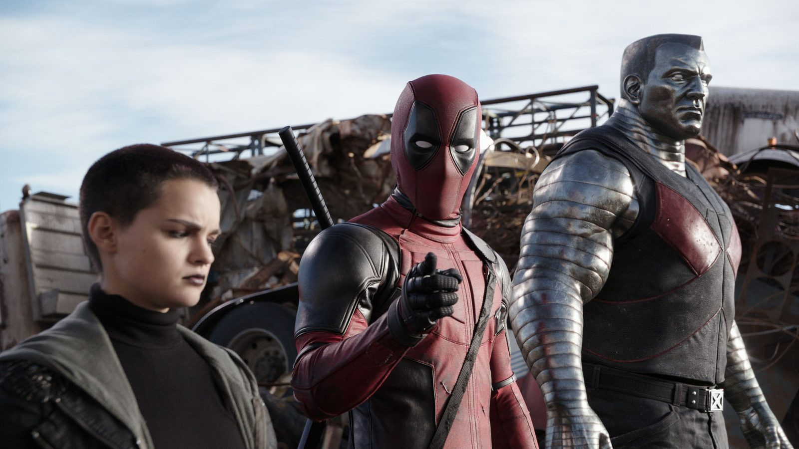
18/ Deadpool,bande-annonce
19/ Kubo and the Two Strings, bande-annonce
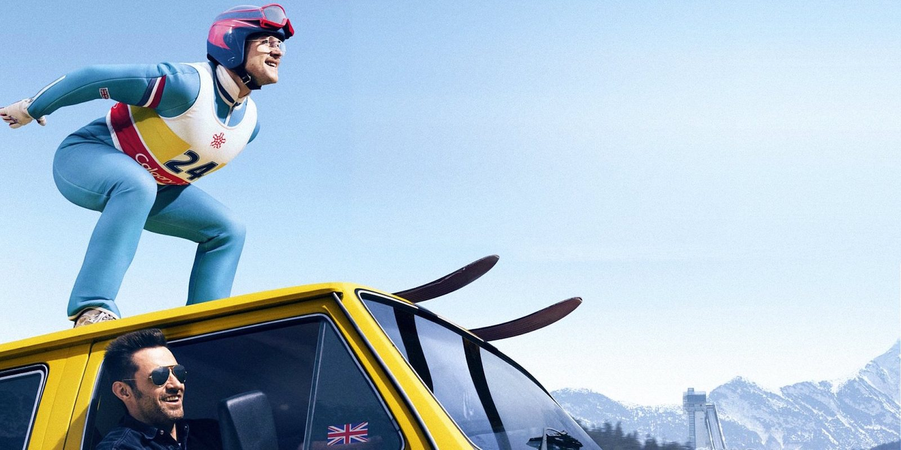
20/ Eddie the Eagle, bande-annonce
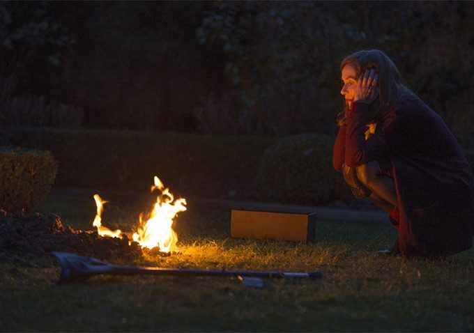
21/ Elle, bande-annonce
Mentions honorables
Manchester by the sea, bande-annonce
The Jungle book, bande-annonce
The hateful eight, bande-annonce
Deepwater Horizon, bande-annonce
Hell or High Water, bande-annonce
Les chevaliers blancs, bande-annonce
Hacksaw ridge, bande-annonce
Tony Erdmann, bande-annonce
Comments 2
Le top des films 2018 | The R Blog, 2019-01-17 17:59
[…] rappel: Top 2017, Top 2016, Top 2015, Top 2014, Top 2013, Top 2012, Top 2011, Top 2010, Top 2009, Top en 2008, […]
Le top des films 2017 | The R Blog, 2017-12-27 11:39
[…] rappel: Top 2016, Top 2015, Top 2014, Top 2013, Top 2012, Top 2011, Top 2010, Top 2009, Top en 2008, […]